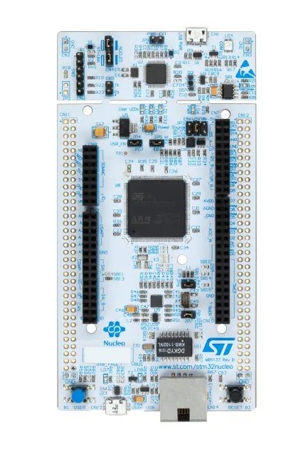
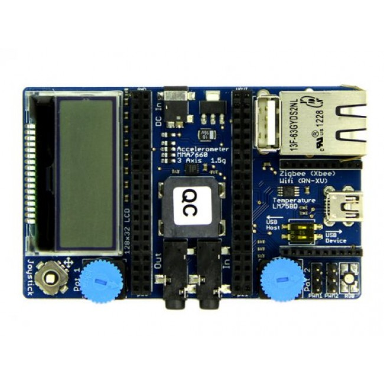
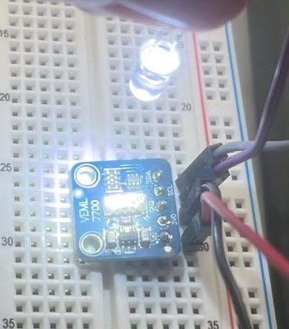
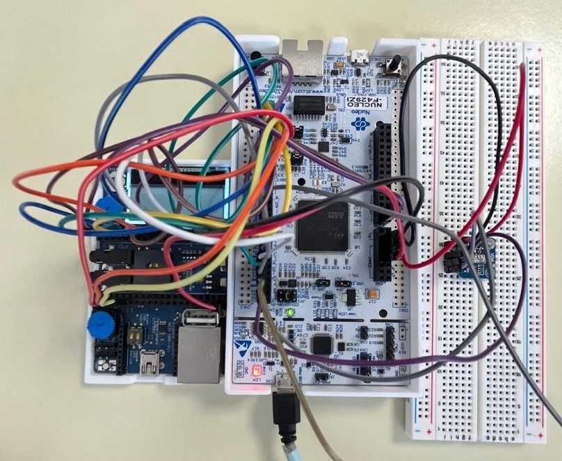
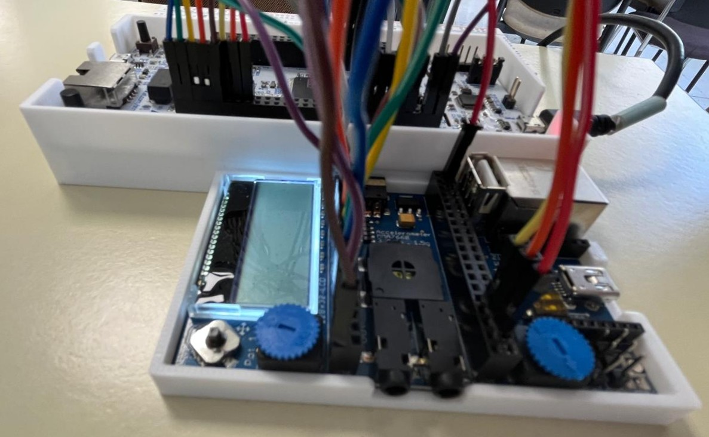
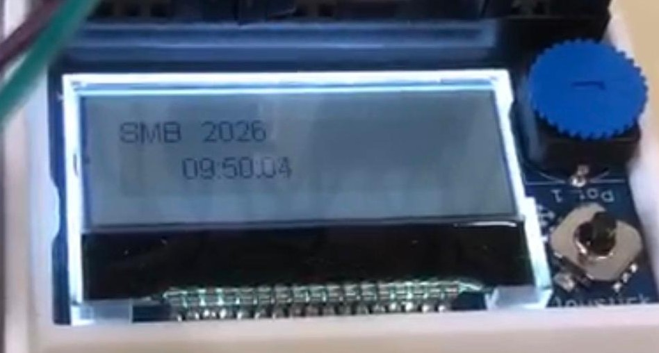
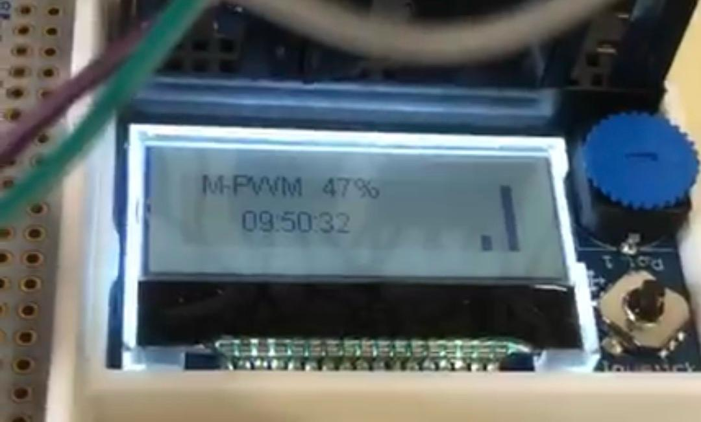
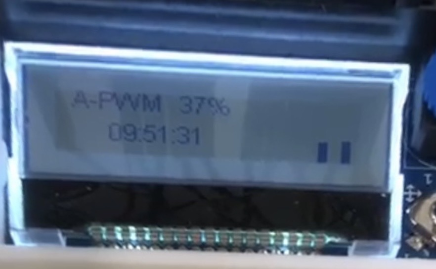

STM32F429ZI — Sistema de control de luminosidad basado en microprocesador
Integración y desarrollo de un control de luminosidad en lenguaje C. Utiliza el sistema operativo RTOS, junto con PWM, sensor de luminosidad, joystick, LCD y UART.
Tarjeta NUCLEO STM32F4ZI con la extensión mbed-app-board.

Tarjeta NUCLEO STM32F4ZI.

Tarjeta mbed-app-board.
Descripción del proyecto
El proyecto consiste en la integración y desarrollo de una
aplicación de control de luminosidad sobre una tarjeta
NUCLEO STM32F4ZI conectada a una mbed-app-board.
El sistema permite controlar la intensidad de un LED de alta
luminosidad mediante PWM, medir la luminosidad mediante un
sensor y visualizar la información a través de un LCD.
La interacción con el sistema se realiza mediante un joystick
y dos potenciómetros.
La aplicación dispone de cuatro modos de funcionamiento:
reposo, manual, automático y programación.

Iluminación del sensor de luminosidad.
Hardware
El sistema se desarrolló utilizando una tarjeta NUCLEO
STM32F4ZI conectada a una mbed-app-board.

Vista superior del sistema.

Vista lateral del sistema.
Componentes principales
NUCLEO STM32F4ZI
Mbed-app-board
Sensor de luminosidad
LED de alta luminosidad
LED RGB
Joystick
Dos potenciómetros
LCD
Modos de funcionamiento
01 — Modo reposo
En el modo reposo, el LCD muestra el mensaje
"SBM 2026" junto con la hora. El LED RGB se ilumina
en color verde y su ciclo de trabajo varía entre el
10 % y el 90 %, aumentando y disminuyendo cada 2 segundos, en pasos
de 10 %.

02 — Modo manual
El modo manual muestra el mensaje "M-PWM" junto al
porcentaje de ciclo de trabajo del LED de alta
luminosidad y la hora. Utiliza ambos potenciómetros,
junto al LED de alta luminosidad y el sensor de
luminosidad para realizar diferentes medidas.
El primer potenciómetro establece una referencia de
luminosidad entre 100 y 4000 lux.
El segundo potenciómetro asigna la intensidad del LED de
alta luminosidad, la cual es medida por el sensor de
luminosidad. Tanto la referenciacomo la luminosidad medida
por el sensor se muestran mediante barras en el LCD.
Cuando la diferencia entre la luminosidad de referencia
y la luminosidad medida supera los 250 lux, el LED RGB
se ilumina en rojo.

03 — Modo automático
En el modo automático se muestra el mensaje "A-PWM"
junto al porcentaje de ciclo de trabajo del LED de
alta luminosidad y la hora. El sistema utiliza el valor
establecido mediante el primer potenciómetro como
referencia de luminosidad y ajusta automáticamente
la intensidad del LED de alta luminosidad mediante PWM
para aproximarse a dicha referencia.
La luminosidad medida por el sensor y la luminosidad
de referencia se muestran en el LCD mediante barras.
Si la diferencia entre ambas medidas supera los
250 lux, el LED RGB se ilumina en azul.
Además, el sistema almacena en un buffer circular de
20 posiciones la hora, el ciclo de trabajo del LED,
la luminosidad medida y la luminosidad de referencia.

04 — Modo programación
El modo programación permite modificar la luminosidad
de referencia y la hora del sistema mediante el joystick.
Las pulsaciones derecha e izquierda permiten seleccionar
entre la luminosidad de referencia, horas, minutos y
segundos. Las pulsaciones arriba y abajo modifican el
valor seleccionado y la pulsación central confirma el
cambio.
Este modo también permite interactuar con el ordenador
mediante comunicación serie utilizando Tera Term.